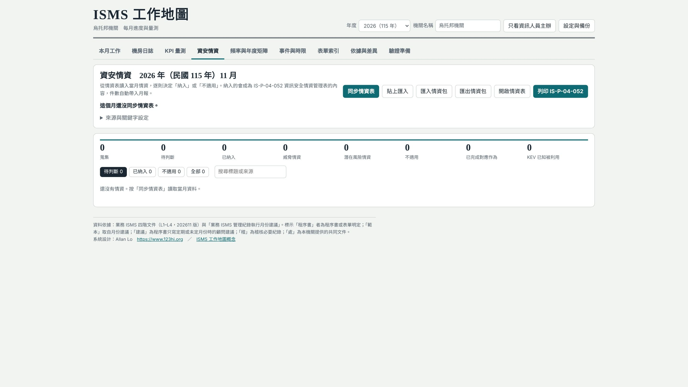
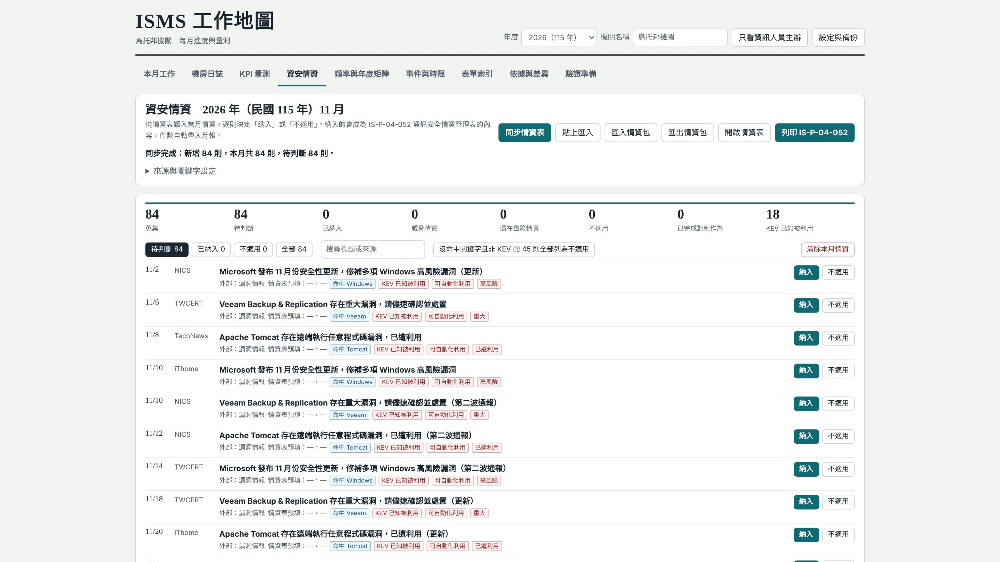
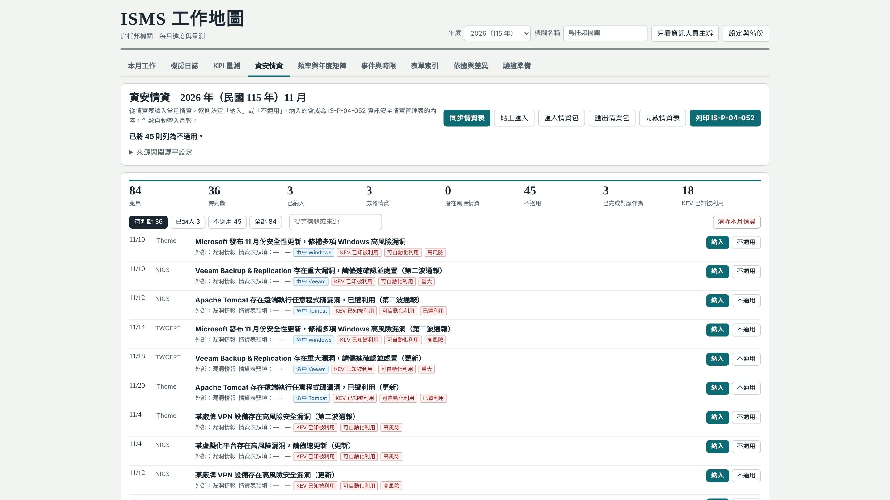
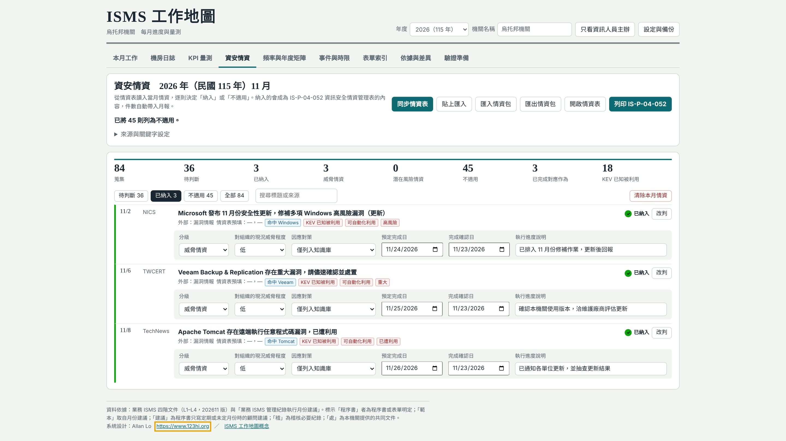

每年十月前稽核前一個月，才開始補紀錄。
程序書很完整寫了近百件事，哪一件該哪一天做？
資安情資每月上百則，一則一則貼進表單。
月報與量測靠人工彙整，年底才發現 KPI 沒達標。
ISMS，不該只為了驗證而存在。
把程序書，變成每天做得完的工作
ISMS 工作地圖
示範畫面：烏托邦機關
每一項工作，
都標明依據與表單
讀完機關的四階文件，逐條整理成工作項目，
再依執行頻率歸類。
0項工作
0張表單
0種事件時限
每日
工作日誌，天天做得完
每日巡檢：點一下就留下紀錄，漏掉的可以補登
機房工作日誌線上填寫，異常自動標示、自動勾稽
照原表單格式列印，月結一鍵彙總呈核
每月
資安情資，同步、初篩、列印全自動




0
則情資，按一下就讀進來
命中本機關使用的設備與軟體
KEV：已知被利用的弱點
可被自動化利用
每月上百則情資，按一下「同步」
自動初篩、排序，最該看的排最前面
不相關的 45 則，一鍵排除並留下篩選紀錄
分級、威脅程度、對策、期限，一列判斷完
自動產出 IS-P-04-052 情資管理表，紀錄編號自動產生
每月
資安月報，
自動彙整
巡檢應執行與實際天數
情資件數與處理結果
27 項量測逐月累計
承辦、主管兩欄簽核
平常有做，月底就只剩列印。
每月・每季・每年
量測，不再等到年底
27 項有效性量測＋4 個資安目標，逐月填、自動累計
哪一項落後，當月就看得到
ISMS 工作地圖
讓資安管理，有效率，而且日常。
單一網頁檔，免安裝、免伺服器，資料留在機關自己的電腦
系統設計 Allan Lo ｜ www.123hi.org
畫面為示範資料